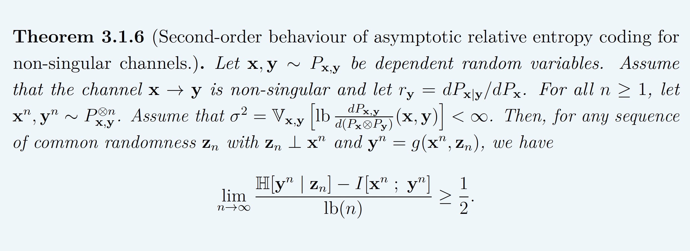
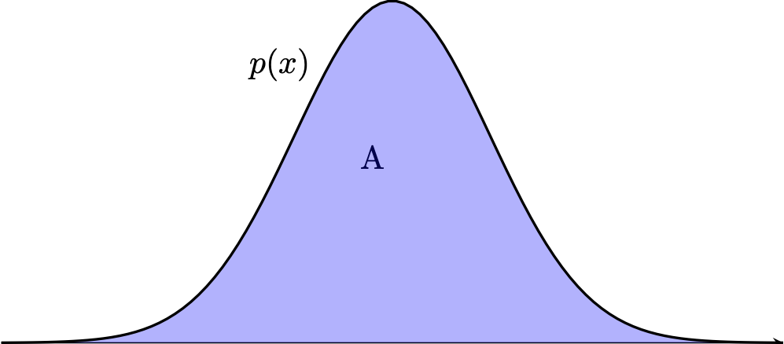
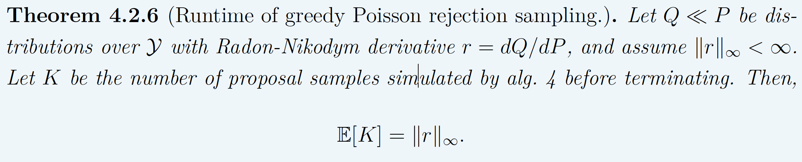
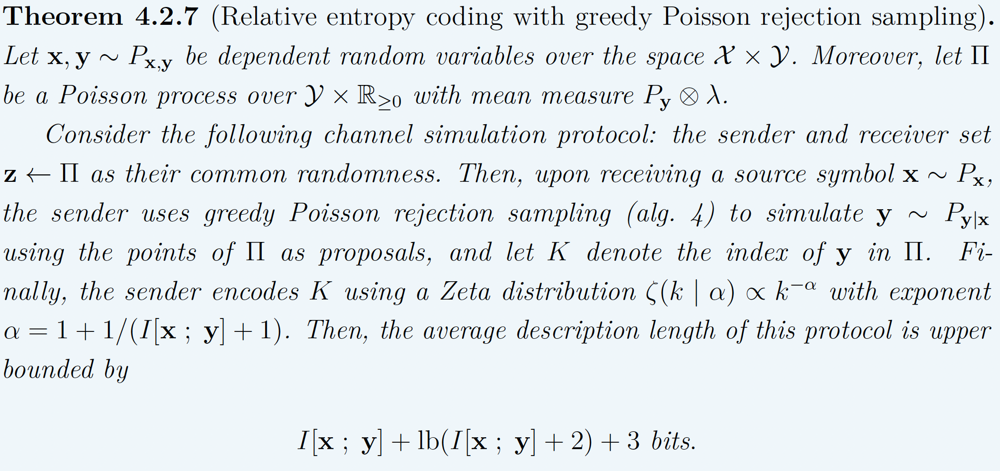

Data Compression with Relative Entropy Coding
Gergely Flamich
04/02/2025
gergely-flamich.github.io
what is data compression?
lossless compression
- Source: \(x \sim P\)
- Code: \(C_P(x)\)
- Decode: \[ C_P^{-1}(C_P(x)) = x \]
- Measure of efficiency: \[ \mathbb{E}[\vert C(x) \vert] \]
lossy compression
- Encode: \(C_P(x)\)
- Decode: \[D_P(C_P(x)) = \hat{x} \approx x\]
- Measures of efficiency:
- Rate: \(\mathbb{E}[\vert C(x) \vert]\)
- Distortion: \(\mathbb{E}[\Delta(x, \hat{x})]\)
transform coding

Usual transform: \(Q(f(x))\)
what is relative entropy coding?
as a lossy compression mechanism
üí° Idea: perturb instead of quantise
- Source: \(x \sim P\)
- Shared randomness: \(z \sim P_z\)
- Code: \(C_P(x, z)\)
- Decode \[ D_P(C_P(x, z), z) \sim P_{y \mid x}\]
''implementing'' relative entropy coding

why care?
learned transform coding
can use reparameterisation trick!
realistic lossy compression

Right-hand image from Careil et al. [1]
differentially private federated learning

main thesis contributions
- Established tight lower bounds for REC performance
- Developed optimal REC algorithms
- Applied REC to practical data compression problems
Fundamental Limits
Communication Complexity
Use \(\mathbb{H}[y \mid z]\) as proxy for rate. Li and El Gamal:
\[ I[x; y] \leq \mathbb{H}[y \mid z] \leq I[x; y] + \log(I[x; y] + 1) + \mathcal{O}(1) \]
❌ not tight!
The width function
\(Q \gets P_{y \mid x}, P \gets P_y\)

\(w_P\) is a probability density!
representing divergences
KL divergence:
Channel simulation divergence:
\[ D_{CS}[Q || P] = h[H] \]
\[ D_{KL}[Q || P] \leq D_{CS}[Q || P] \]
tight lower bound

behaviour of the lower bound

- A: \(P = \mathcal{L}(0, 1)\), \(Q = \mathcal{L}(0, b)\)
- B: \(P = \mathcal{N}(0, 1)^{\otimes d}\), \(Q = \mathcal{N}(1, 1/4)^{\otimes d}\)
asymptotic lower bound

Relative entropy coding using Poisson processes
Poisson Processes
- Collection of random points in space
- Focus on spatio-temporal processes on \(\mathbb{R}^D \times \mathbb{R}^+\)
- Exponential inter-arrival times
- Spatial distribution \(P_{X \mid T}\)
- Idea: use process as common randomness in REC
Example with \(P_{X \mid T} = \mathcal{N}(0, 1)\)

Example with \(P_{X \mid T} = \mathcal{N}(0, 1)\)

Example with \(P_{X \mid T} = \mathcal{N}(0, 1)\)

Example with \(P_{X \mid T} = \mathcal{N}(0, 1)\)

Example with \(P_{X \mid T} = \mathcal{N}(0, 1)\)

Example with \(P_{X \mid T} = \mathcal{N}(0, 1)\)

Example with \(P_{X \mid T} = \mathcal{N}(0, 1)\)

Example with \(P_{X \mid T} = \mathcal{N}(0, 1)\)

Rejection Sampling
- Sampling algorithm for target distribution \(Q\).
- Using proposal \(P\)
- Bound on their density ratio \(q/p\): \(M\)
Rejection Sampling

RS with \(P = \mathcal{N}(0, 1), Q = \mathcal{N}(1, 1/16)\)

RS with \(P = \mathcal{N}(0, 1), Q = \mathcal{N}(1, 1/16)\)

RS with \(P = \mathcal{N}(0, 1), Q = \mathcal{N}(1, 1/16)\)

RS with \(P = \mathcal{N}(0, 1), Q = \mathcal{N}(1, 1/16)\)
RS with \(P = \mathcal{N}(0, 1), Q = \mathcal{N}(1, 1/16)\)

RS with \(P = \mathcal{N}(0, 1), Q = \mathcal{N}(1, 1/16)\)

RS with \(P = \mathcal{N}(0, 1), Q = \mathcal{N}(1, 1/16)\)

RS with \(P = \mathcal{N}(0, 1), Q = \mathcal{N}(1, 1/16)\)

RS with \(P = \mathcal{N}(0, 1), Q = \mathcal{N}(1, 1/16)\)

RS with \(P = \mathcal{N}(0, 1), Q = \mathcal{N}(1, 1/16)\)

RS with \(P = \mathcal{N}(0, 1), Q = \mathcal{N}(1, 1/16)\)

RS with \(P = \mathcal{N}(0, 1), Q = \mathcal{N}(1, 1/16)\)

Greedy Poisson Rejection Sampling
Motivation

Fact: \((x, y) \sim \mathrm{Unif}(A) \, \Rightarrow\, x \sim P\)
Can we do the same with Poisson processes?
Yes!
GPRS with \(P = \mathcal{N}(0, 1), Q = \mathcal{N}(1, 1/16)\)

GPRS with \(P = \mathcal{N}(0, 1), Q = \mathcal{N}(1, 1/16)\)

GPRS with \(P = \mathcal{N}(0, 1), Q = \mathcal{N}(1, 1/16)\)

GPRS with \(P = \mathcal{N}(0, 1), Q = \mathcal{N}(1, 1/16)\)

GPRS with \(P = \mathcal{N}(0, 1), Q = \mathcal{N}(1, 1/16)\)

GPRS with \(P = \mathcal{N}(0, 1), Q = \mathcal{N}(1, 1/16)\)

GPRS with \(P = \mathcal{N}(0, 1), Q = \mathcal{N}(1, 1/16)\)

Runtime of GPRS

Codelength of GPRS

Fast GPRS with \(P = \mathcal{N}(0, 1), Q = \mathcal{N}(1, 1/16)\)

Fast GPRS with \(P = \mathcal{N}(0, 1), Q = \mathcal{N}(1, 1/16)\)

Fast GPRS with \(P = \mathcal{N}(0, 1), Q = \mathcal{N}(1, 1/16)\)

Fast GPRS with \(P = \mathcal{N}(0, 1), Q = \mathcal{N}(1, 1/16)\)

Fast GPRS with \(P = \mathcal{N}(0, 1), Q = \mathcal{N}(1, 1/16)\)

Fast GPRS with \(P = \mathcal{N}(0, 1), Q = \mathcal{N}(1, 1/16)\)

Runtime of fast GPRS

This is optimal.
Codelength of fast GPRS
Now, encode search path \(\nu\).
Computationally Lightweight ML-based data compression
Data Compression with INRs

Image from Dupont et al. [4]
- computationally lightweight
- short codelength
COMBINER
COMpression with Bayesian Implicit Neural Representations

Image from Blundell et al. [7]
üí°Gradient descent is the transform!
COMBINER

COMBINER

Take-home messages
- Relative entropy coding is a stochastic alternative to quantization for lossy source coding
- Analysed selection sampling-based REC algorithms
- Greedy Poisson rejection sampling is an optimal selection sampler
- Implicit neural represenations are an exciting, compute-efficient approach to data compression with huge potential
References I
- [1] Careil, M., Muckley, M. J., Verbeek, J., & Lathuilière, S. Towards image compression with perfect realism at ultra-low bitrates. ICLR 2024.
- [2] C. T. Li and A. El Gamal, “Strong functional representation lemma and applications to coding theorems,” IEEE Transactions on Information Theory, vol. 64, no. 11, pp. 6967–6978, 2018.
References II
- [4] E. Dupont, A. Golinski, M. Alizadeh, Y. W. Teh and Arnaud Doucet. "COIN: compression with implicit neural representations" arXiv preprint arXiv:2103.03123, 2021.
- [5] G. F., L. Wells, Some Notes on the Sample Complexity of Approximate Channel Simulation. To appear at Learning to Compress workshop @ ISIT 2024.
- [6] D. Goc, G. F. On Channel Simulation with Causal Rejection Samplers. To appear at ISIT 2024
References III
- [7] C. Blundell, J. Cornebise, K. Kavukcuoglu and D. Wierstra. Weight uncertainty in neural network. In ICML 2015.